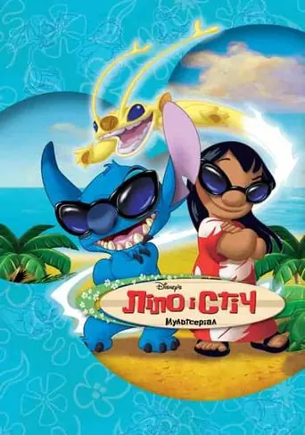

The genetics
Genetic engineering provides the whole premise. Each of the 600-odd 'cousins' is a genetic experiment made by the alien scientist Jumba Jookiba, many of them designed for destruction, and in most episodes Jumba explains the engineered ability of the creature at hand before Lilo and Stitch capture and rehabilitate it. The series' message is that an engineered creature is not bound by its design: given acceptance and a purpose, a being built for mischief can find a place where its traits do good, in keeping with the theme of 'ohana (family). Jumba is a self-described evil genius turned lovable uncle, who still occasionally builds a new experiment for personal reasons, while his former partner and financier, Hämsterviel, wants the experiments as weapons to conquer the galaxy. The creatures and their powers are cartoon fantasy with no basis in real genetics.
How genetics is portrayed
- Overall portrayal of genetics
- mixed Creatures engineered for destruction are redeemed and put to good use by the heroes and a reformed creator, while a villain seeks to weaponise them; the series sets the good use of the creations against their co-option.
- Outcome of the genetic intervention
- positive Each experiment causes a bout of havoc when activated, but the series' arc is their redemption: most are reformed and given roles where their engineered abilities help, and the finale defeats Hämsterviel with the reformed experiments' help.
- Dr. Jumba Jookiba
- ambivalent Aim: malevolent, curiosity, personal (negative). The self-described evil genius built his experiments for destruction and still occasionally makes new ones for personal reasons, but in the series he is a reformed, comic member of the family who helps capture and rehabilitate his creations.
- Dr. Jacques von Hämsterviel
- villain Aim: power (negative). Jumba's imprisoned former partner and financier sends Gantu to capture the experiments to use them to conquer the Galactic Federation, and is defeated in the finale.
- Lilo and Stitch
- hero Aim: benevolent (positive). The heroes catch each activated experiment, tame its programming and find it a 'one true place' where its engineered ability does good, the series' moral core.
The story
Continuing from Stitch! The Movie, Lilo Pelekai and Stitch, Experiment 626, set out to find the 623 other experiments created by the alien scientist Jumba Jookiba, which are scattered across Kauai as dormant pods. In each episode, an experiment is activated and causes trouble with its special power, such as generating electricity, causing earthquakes or turning good experiments bad with a song. Lilo and Stitch, helped by Jumba and Pleakley, catch it, tame its destructive programming and find its 'one true place', a role where its ability can do good. They compete with Captain Gantu and his lazy sidekick, Experiment 625, who try to capture the experiments for Jumba's former partner, the imprisoned Dr. Jacques von Hämsterviel, who wants to use them to conquer the Galactic Federation. The series ends with the film Leroy & Stitch, in which Lilo, Stitch and the reformed experiments defeat Hämsterviel and Lilo and Stitch become official experiment hunters.